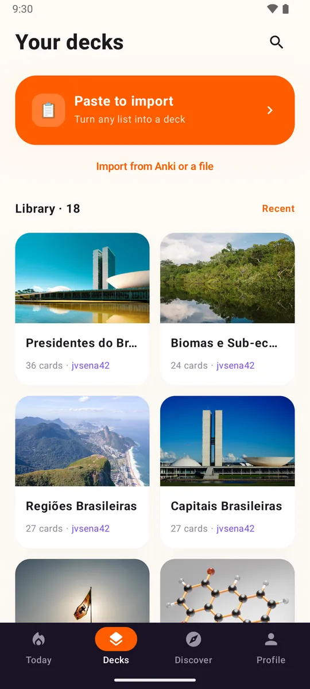

Tus mazos vienen contigo
Texto, imágenes y cloze se importan desde archivos .apkg, .txt y .csv.
Para usuarios de Anki
Loopky abre tus archivos .apkg y suma audio, habla, mazos compartidos y tarjetas escritas con IA. Sin complementos, sin costo.
Gratis. Sin anuncios. Código abierto.

Texto, imágenes y cloze se importan desde archivos .apkg, .txt y .csv.
La lectura en voz alta y la revisión de pronunciación ya vienen incluidas, en 35 idiomas.
Publica un mazo y cualquiera puede seguirlo o clonarlo.
Diseño de dos paneles en tabletas y una herramienta de línea de comandos para trabajar con muchos mazos.
En una tableta, Loopky usa dos paneles de verdad: la cola de hoy junto a tus mazos, un mazo junto a sus tarjetas. Tabletas Android ya, iPad con la app de iOS.

| En Anki | En Loopky |
|---|---|
| Texto y campos | Sí, tú eliges anverso y reverso |
| Imágenes | Sí |
| Cloze | Sí, una tarjeta por hueco |
| Tarjetas invertidas | Sí |
| Audio | No, usa la lectura en voz alta de la app |
| LaTeX | Se muestra como código |
| Historial de repasos | No, las tarjetas empiezan de cero |
Archivos .anki21b más nuevos: vuelve a exportar marcando "Support older Anki versions" (compatibilidad con versiones antiguas de Anki).
La herramienta de línea de comandos de Loopky funciona en Windows, macOS y Linux.
En Anki, exporta el mazo como .apkg con multimedia. Ábrelo en Loopky y elige los campos del anverso y el reverso. ¿Solo tienes una lista? Pégala.

Para la mayoría, sí. Revisa antes si dependes de archivos de audio, LaTeX, plantillas de tarjeta personalizadas o FSRS.
No. Cada botón de calificación tiene un intervalo fijo que tú defines, de 1 a 365 días.
Sí. Sin anuncios, sin suscripción y de código abierto con licencia MIT.
Loopky está en Android por ahora. La app de iOS ya está hecha y llega muy pronto.
Con unos minutos al día basta.